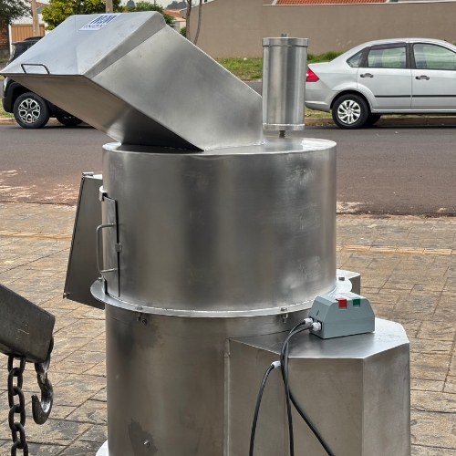
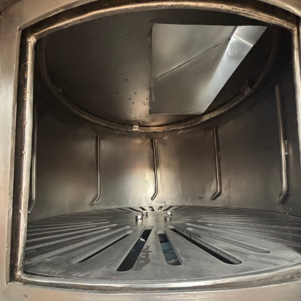
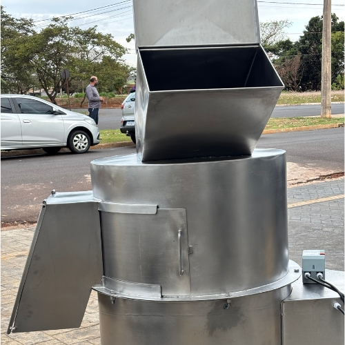
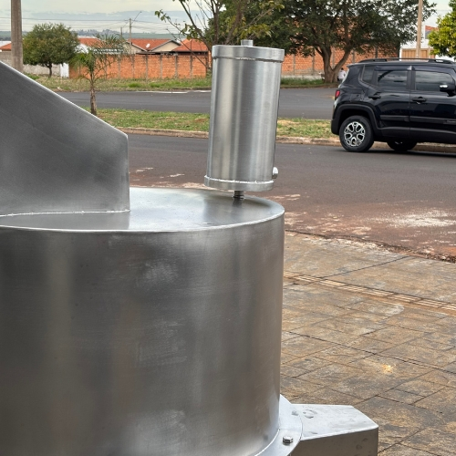
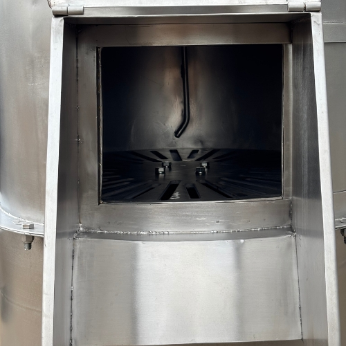
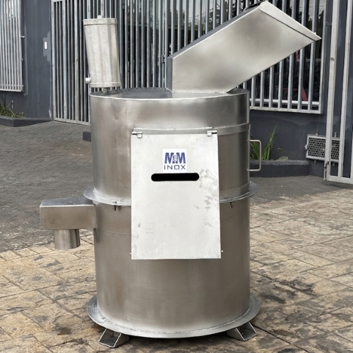

Lavador De Buchos
O Lavador De Buchos MeM Inox é desenvolvido para aumentar a produtividade e a qualidade dos produtos. Com tecnologia e inovação em cada detalhe.
O Lavador De Buchos MeM Inox é desenvolvido para aumentar a produtividade e a qualidade dos produtos. Com tecnologia e inovação em cada detalhe.
A Lavadora de Bucho MeM Inox é um equipamento indispensável para o seu negócio, garantindo uma higienização adequada e eficiente durante o processamento dos alimentos. Esse processo de limpeza é essencial para manter a qualidade dos produtos e contribuir para a segurança e higiene na produção.
Nossa máquina proporciona uma limpeza eficiente por meio de jatos de alta pressão, detergentes de limpeza e um mecanismo de rotação, garantindo maior eficiência e padronização durante o processo de higienização dos produtos.
Seguimos rigorosos critérios de qualidade e segurança na fabricação de nossos equipamentos. O maquinário é desenvolvido com materiais de alta qualidade, sendo projetado para oferecer eficiência, segurança, facilidade de utilização e, principalmente, a durabilidade que só a MeM Inox oferece.







Proporcionam uma higienização eficiente e de alta qualidade, contribuindo para a remoção de resíduos e impurezas durante o processo.
Processa até 150 buchos por hora, proporcionando maior produtividade e eficiência para a operação.
Design pensado para reduzir tempo de manutenção e maximizar rendimento, com peças de reposição padronizadas e suporte técnico especializado.
O equipamento possui um cesto rotativo interno e um disco inferior especial (geralmente raiado ou com relevos arredondados) que giram em alta velocidade
Até 140 buchos lavados por hora, a maior eficiencia do mercado.
Aço Inoxidavel 304 de alta qualidade
Motor de até 5 CV, prorcionando potência e econômia.
Até 140 buchos lavados por hora, a maior eficiencia do mercado.
A Máquina de Bucho é um equipamento desenvolvido para a limpeza eficiente de buchos no processamento frigorífico. Ela utiliza um disco giratório central e jatos de água de alta pressão, proporcionando uma limpeza uniforme, maior produtividade e padronização do processo.
A Máquina de Bucho possui capacidade média de 240 buchos por hora, proporcionando alta eficiência, produtividade e padronização durante o processo de limpeza.
Não. A máquina foi projetada para otimizar o espaço disponível, facilitando a integração ao processo produtivo e contribuindo para um melhor aproveitamento da área do frigorífico.
Sim. O projeto considera a rotina de limpeza e higienização do ambiente frigorífico, facilitando a manutenção das condições sanitárias do equipamento.
A Máquina de Bucho é equipada com um motoredutor de 5 CV, desenvolvido para proporcionar força e agilidade durante o processo de limpeza. O equipamento também conta com regulagem de velocidade, permitindo ajustar o funcionamento de acordo com a necessidade do processo.
As condições de garantia podem variar conforme o projeto e a negociação. Entre em contato com nossa equipe para consultar as condições.
Entre em contato com a equipe da MeMInox para apresentar as necessidades do seu processo e receber uma proposta adequada ao seu frigorífico.